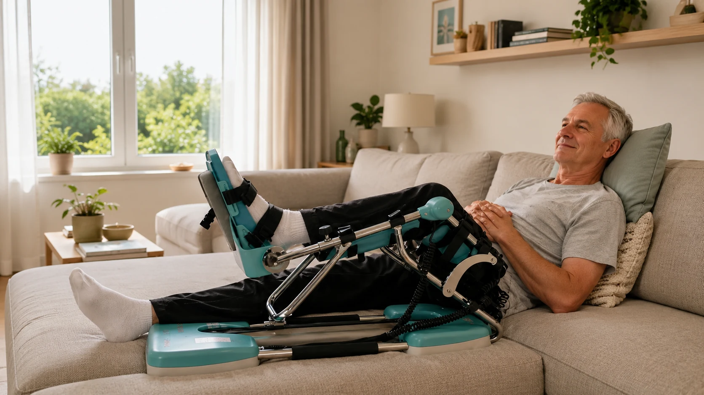

Veel patiënten merken het in de eerste dagen na hun knieoperatie: de ene kinetec-sessie verloopt vlot, de volgende is zo pijnlijk dat ze het toestel na tien minuten stilleggen. Het verschil zit vaak niet in de knie, maar in de klok. Wie zijn pijnstillers op het juiste moment inneemt, haalt met de kinetec meer graden met minder pijn. In dit artikel leest u hoe u uw pijnstilling na een knieoperatie afstemt op uw sessies, waarom een vast schema beter werkt dan “nemen als het pijn doet”, en wanneer u veilig kunt afbouwen.
Belangrijk vooraf
Dit artikel gaat over de timing van uw pijnmedicatie rond het oefenen, niet over welke medicatie of dosis u neemt. Dat bepaalt uitsluitend uw chirurg, huisarts of apotheker. Volg altijd het schema dat u bij ontslag uit het ziekenhuis heeft meegekregen en neem nooit meer dan de voorgeschreven dosis.
Waarom Pijnstilling Zo Belangrijk Is voor Uw Revalidatie
Pijn is na een knieoperatie normaal. Toch is het geen teken van “flink zijn” om ze zonder medicatie te verbijten. Pijn heeft namelijk een direct effect op uw knie:
- Uw spieren spannen zich op. Bij pijn trekken de hamstrings en de quadriceps zich beschermend samen. De kinetec duwt dan tegen een gespannen knie in, en u haalt minder graden dan het toestel aangeeft.
- U oefent korter en minder vaak. Een sessie die pijn doet, stelt u uit. Juist regelmaat is wat een CPM-toestel effectief maakt.
- De zwelling neemt toe. Forceren tegen hevige pijn in prikkelt het weefsel, wat meer vocht en dus nog meer stijfheid oplevert. Meer hierover in ons artikel over knie zwelling na een operatie verminderen.
- U slaapt slechter. Slecht slapen verlaagt uw pijndrempel de volgende dag, en zo draait u in een vicieuze cirkel.
Goede pijnstilling is dus geen luxe, maar een voorwaarde om de eerste weken na uw operatie voldoende beweging in de knie te krijgen. Een knie die in die fase te weinig beweegt, loopt meer risico op verklevingen en blijvende stijfheid.
De Gouden Regel: Oefen Wanneer Uw Medicatie Werkt
Pijnstillers in tabletvorm werken niet onmiddellijk. De meeste beginnen na ongeveer 30 tot 60 minuten te werken en houden hun effect enkele uren aan, afhankelijk van het middel. Daaruit volgt een eenvoudige regel:
Plan de sessie rond de pil, niet de pil rond de sessie
Kijk naar de vaste innametijden in uw voorgeschreven schema en plan uw kinetec-sessies binnen het uur daarna. Neem dus geen extra tablet om een sessie te kunnen doen, maar verschuif de sessie naar het moment waarop uw medicatie al werkt.
Een voorbeeld: staat in uw schema een inname om 8 uur, 14 uur en 20 uur, dan plant u uw sessies rond 9 uur, 15 uur en 21 uur. Zo valt elke sessie in het venster waarin de pijnstilling op haar sterkst is. Heeft u 's middags nog een extra korte sessie gepland, leg die dan zo dicht mogelijk bij een inname.
Hoeveel sessies per dag en hoe lang elke sessie duurt, leest u in ons kinetec-gebruiksschema in graden per dag.
Vast Schema of “Als Het Pijn Doet”?
In de eerste dagen na een knieprothese of een grote knieoperatie krijgen de meeste patiënten een vast schema mee: pijnstillers op vaste uren, ook als de pijn op dat moment meevalt. Daar is een goede reden voor. Het is veel makkelijker pijn onder controle te houden dan ze terug onder controle te krijgen zodra ze eenmaal hoog opgelopen is.
Wie wacht tot de knie echt pijn doet, loopt telkens een uur achter de feiten aan. Net in dat uur valt dan vaak een kinetec-sessie of een nacht. Houd daarom in de eerste weken strikt vast aan de uren die uw arts heeft voorgeschreven, en schakel pas over naar “enkel wanneer nodig” als uw arts dat aangeeft.

Pijnstilling Afbouwen: Zo Ziet een Typisch Verloop Eruit
Het afbouwen van pijnmedicatie gebeurt altijd in overleg met uw arts. Toch helpt het om te weten welk verloop veel patiënten na een totale knieprothese doormaken. Na een artroscopie of een kleinere ingreep gaat dit doorgaans sneller.
Sessie na elke inname
Graden bouwen op
Eerst overdag
of de nacht
Een paar praktische vuistregels bij het afbouwen:
- Bouw eerst overdag af, pas daarna 's nachts. Een goede nachtrust is in de eerste weken belangrijker dan één tablet minder. Tips voor comfortabel liggen vindt u in ons artikel over de kinetec 's nachts en comfort.
- Houd één dosis rond uw zwaarste inspanning. Heeft u een sessie kinesitherapie of een lange kinetec-sessie, dan is dat vaak het laatste moment waarop u nog medicatie nodig heeft.
- Let op een terugval in graden. Gaat uw buiging achteruit nadat u een tablet heeft geschrapt, dan was dat misschien te vroeg. Bespreek het met uw arts.
Een Voorbeelddag: Medicatie, Kinetec en IJs
Onderstaande dag is een voorbeeld van timing, geen medisch voorschrift. De innametijden neemt u over uit uw eigen schema; de rest schuift u eromheen.
| Tijdstip | Wat | Waarom |
|---|---|---|
| 08:00 | Pijnstiller volgens schema + ontbijt | 's Ochtends is de knie het stijfst |
| 08:45 | Kinetec-sessie | Medicatie werkt, spieren kunnen ontspannen |
| 09:30 | 15-20 min koelen, been hoog | Houdt zwelling na de sessie beperkt |
| 14:00 | Pijnstiller volgens schema | Vaste inname, ook als de pijn meevalt |
| 14:45 | Kinetec-sessie of kinesitherapie | Tweede venster van de dag |
| 20:00 | Pijnstiller volgens schema | Voorbereiding op de avond en de nacht |
| 20:45 | Laatste kinetec-sessie, daarna koelen | Soepele knie voor het slapengaan |
Koelen na de sessie is een handige aanvulling op uw medicatie: het dempt de pijn en de zwelling die door het bewegen ontstaan. Leg nooit ijs rechtstreeks op de huid of op een verse wonde; gebruik een doek of een coolpack in een hoes, en volg de richtlijnen voor uw wondzorg. Meer over de zorg rond hechtingen leest u in ons artikel over de kinetec en wondzorg bij hechtingen of nietjes.
Aandachtspunten bij Pijnmedicatie en Oefenen
- Sterke pijnstillers kunnen suf of duizelig maken. Sta daarom rustig op na een sessie en zorg dat de weg naar het toilet vrij is. Het valrisico is in de eerste week het grootst.
- Ontstekingsremmers zijn niet voor iedereen geschikt. Bij maagproblemen, nierproblemen of in combinatie met bepaalde medicatie beslist uw arts of ze toegelaten zijn. Neemt u antistolling, lees dan ook ons artikel over de kinetec en bloedverdunners.
- Combineer geen middelen op eigen houtje. Veel vrij verkrijgbare producten bevatten dezelfde werkzame stof als uw voorgeschreven medicatie. Vraag bij twijfel altijd uw apotheker.
- Pijnmedicatie maskeert geen alarmsignalen. Neemt de pijn toe ondanks uw schema, dan is dat een reden om contact op te nemen, niet om meer te nemen.
Wanneer Is Pijn Geen Normale Pijn Meer?
Een trekkend gevoel op het einde van de beweging, en een pijnscore tot ongeveer 4 op 10 tijdens de sessie, is normaal. Zakt de pijn binnen een half uur na de sessie terug, dan zat u goed. Specifieke pijn achter de knie bespreken we apart in ons artikel over pijn in de knieholte na een knieprothese.
Neem contact op met uw arts bij:
- Pijn die blijft toenemen ondanks uw medicatieschema
- Scherpe of stekende pijn tijdens de sessie die niet verdwijnt als u stopt
- Pijn en zwelling in de kuit, zeker met een warm of rood onderbeen
- Koorts boven 38,5°C, roodheid of afscheiding uit de wonde
- Plotse kortademigheid of pijn op de borst: bel dan meteen 112
Kinetec Huren bij PhysioVisit
Bij PhysioVisit huurt u een professionele kinetec CPM-machine voor €17 per dag, geleverd in heel België. Bij de installatie aan huis stellen we het toestel op uw maat in en bespreken we samen hoe u uw sessies over de dag verdeelt, afgestemd op uw medicatieschema.
- Levering en installatie aan huis, overal in België
- Instelling volgens het protocol van uw chirurg
- Praktische uitleg over opbouw van graden en sessieduur
- Ophaling na afloop van de huurperiode
Zit u in de regio Grimbergen, Strombeek-Bever, Humbeek, Beigem of Koningslo, dan kan onze kinesitherapeut ook bij u thuis de revalidatie opvolgen via kinesitherapie aan huis. Is uw knie klaar voor de volgende stap, dan huurt u bij ons ook een hometrainer voor €2 per dag.
Over de terugbetaling
De terugbetaling van een kinetec verloopt via uw verzekering, niet via de mutualiteit. Wij bezorgen u een factuur die u indient. Sommige polissen betalen het volledige bedrag terug, andere de helft of een beperkt bedrag. Vraag dit altijd na bij uw eigen verzekeraar. Meer uitleg vindt u in ons artikel over de kinetec terugbetaling in België.
Veelgestelde Vragen over Pijnstillers en de Kinetec
Kinetec Huren bij PhysioVisit?
Wij leveren en installeren uw kinetec aan huis in heel België en helpen u een haalbaar dagschema op te stellen. Vanaf €17/dag.
Conclusie
Met de juiste timing van uw pijnstillers haalt u meer uit elke kinetec-sessie. Houd in de eerste weken vast aan het schema van uw arts, plan uw sessies binnen het uur na een inname, en koel uw knie na afloop. Bouw pas af in overleg met uw arts, eerst overdag en pas later 's nachts, en let erop dat uw graden niet achteruitgaan.
Pijn die ondanks uw schema toeneemt, is nooit iets om te verbijten. Heeft u vragen over uw dagschema met de kinetec of over begeleiding aan huis? Neem gerust contact met ons op. Wilt u weten wat u de komende weken verder mag verwachten, lees dan ook ons overzicht van het herstel na een knieprothese week per week.